Awards & Achievements
Competition results, certifications, scholarships and honours. Community service lives on the Volunteering page; judging and peer review on the Adjudications page.
Achievements & Certifications
-
IELTS Academic
British CouncilDecember 2025
Did a very rushed prep in the final 1.5 days, and honestly couldn't have pulled it off without two of my favourite juniors — grateful to U Mong Sain Chak for the last-minute push when I needed it most, and to Rubayet Sabbir Faruque for being my mock examiner through all the speaking practice and honest feedback.
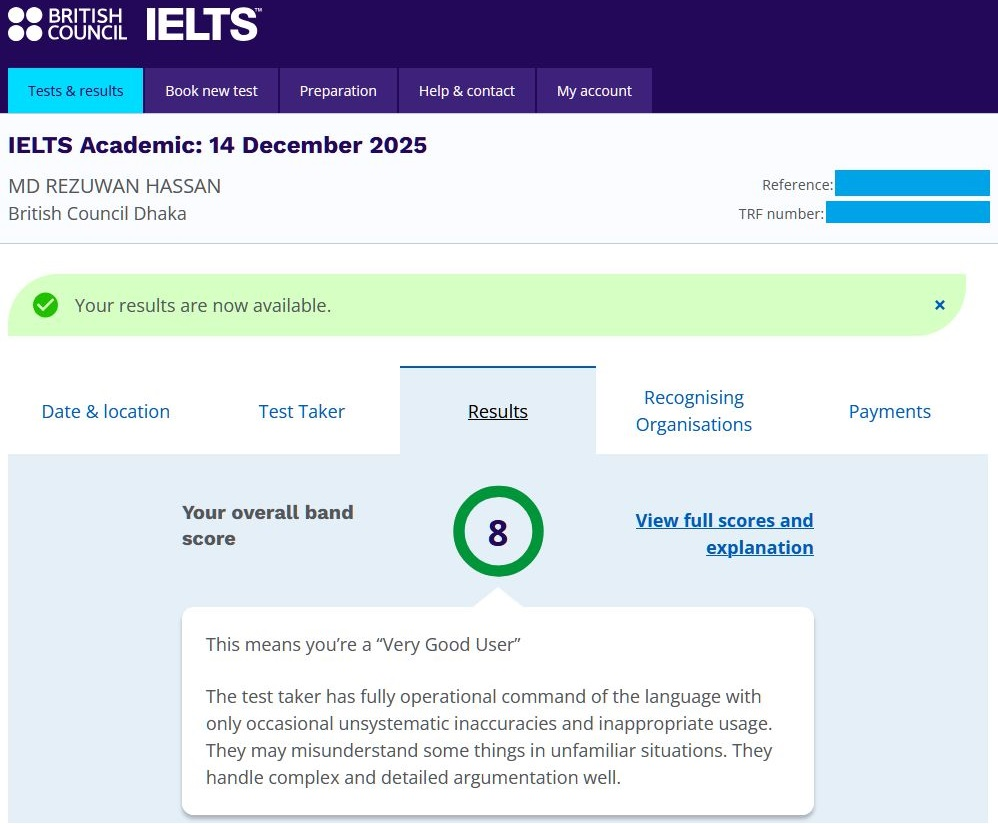
-
Runners-up — National AI Hackathon
Bangladesh Innovation ConclaveMay 2025
Competed with team AgriBRACUion in the Agriculture category, presenting AgriBuddy — an AI-powered agentic support system delivering personalised, real-time agricultural guidance to farmers in Bangladesh via a Bangla-language chatbot combining a RAG framework, vision models and a modular agent design. Teammates: MD. Shaleh Islam Tonmoy, Tanmoy Shome, Rawhatur Rabbi and Ruwad Naswan. A big shoutout to Dr. Swakkhar Shatabda — this project wouldn't have taken shape without his initial push.
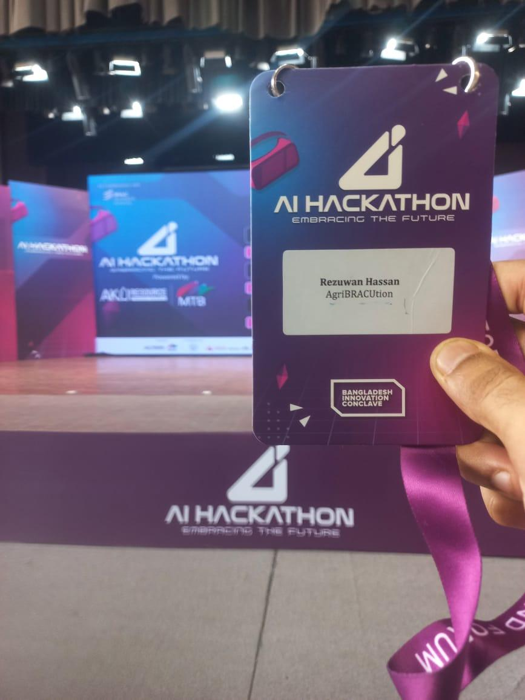
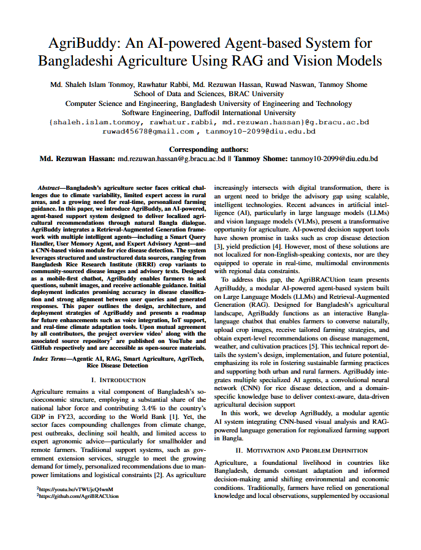
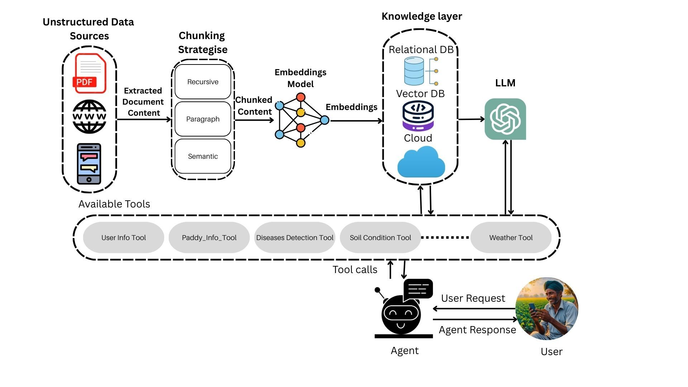
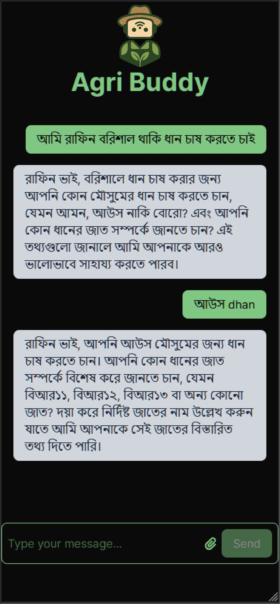
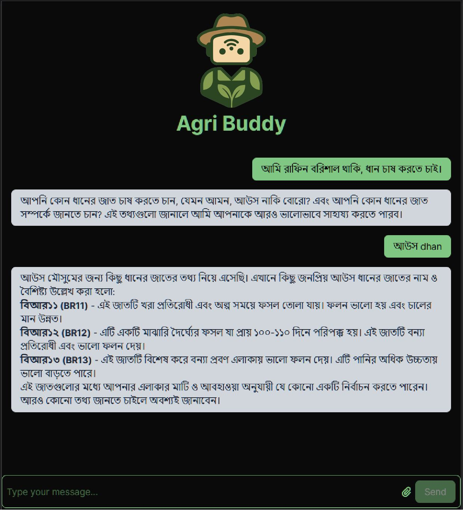
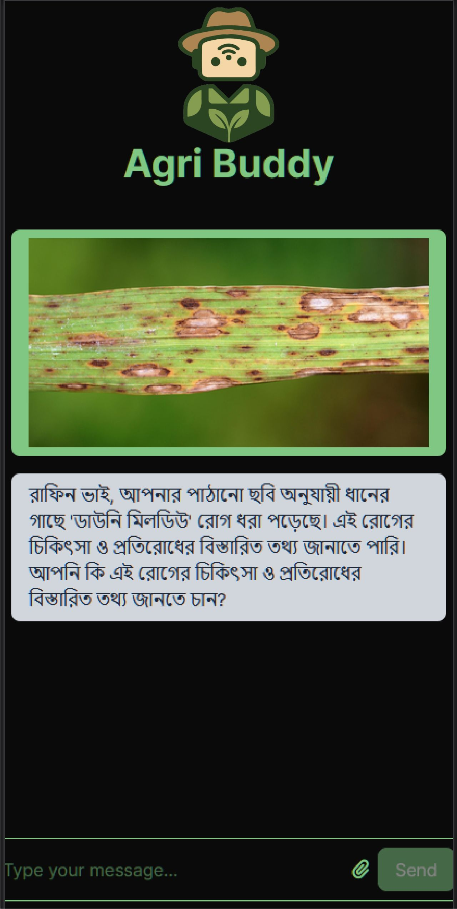
-
Expert (Remote), Project Niti
Google ResearchDecember 2023
Google approached Bengali.AI's founder Ahmed Imtiaz Humayun about a collaboration on a research project concerning Bengali. A small team was formed and I was one of the selected members; we wrapped the project within a few months and submitted the work to Google.
Conducted adversarial data collection and red-teaming of Generative AI models, curating high-sensitivity regional-language datasets and cultural-context benchmarks that strengthened safety guardrails, model alignment, and robustness against localized adversarial and harmful content.
-
Invitee — Google Foo Bar Challenge
GoogleJuly 2023
While coding for a research project in 2023, I googled the Lambda function syntax and unexpectedly got invited to Google's Foo Bar Challenge — an invitation-only recruitment program for Google career opportunities, events and programs. The program was shut down in April 2024.
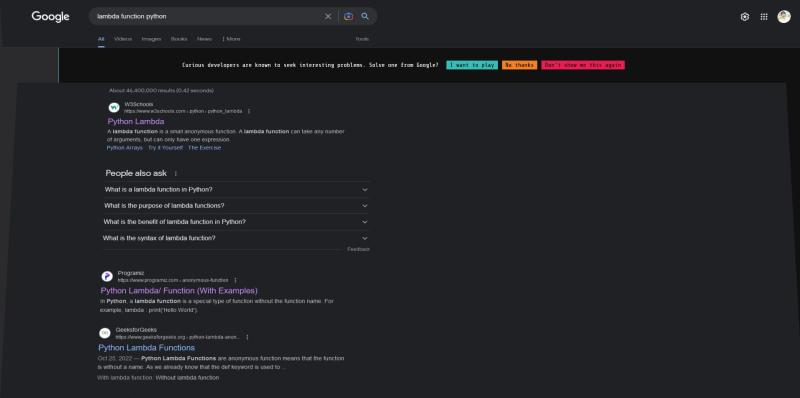
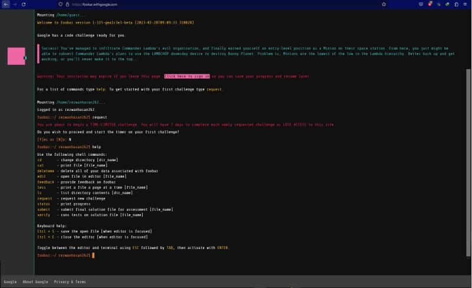
-
Winner — Photography Contest, "All about Green"
FotobossJuly 2023
Won the photography contest themed "All about Green".
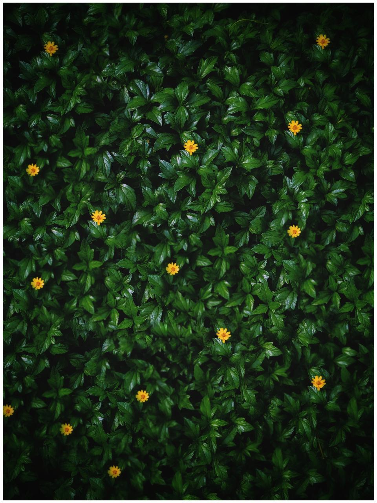
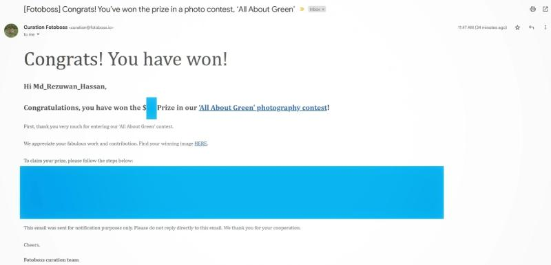
Awards & Honours
-
Recognition from the Ministry of Foreign Affairs, Bangladesh
Ministry of Foreign Affairs, BangladeshJune 2023
Invited to talk about multiple open-source linguistic project initiatives and to represent Bengali.AI to the Ministry of Foreign Affairs of Bangladesh.
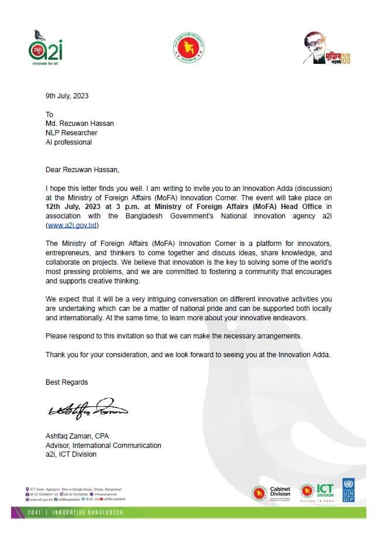
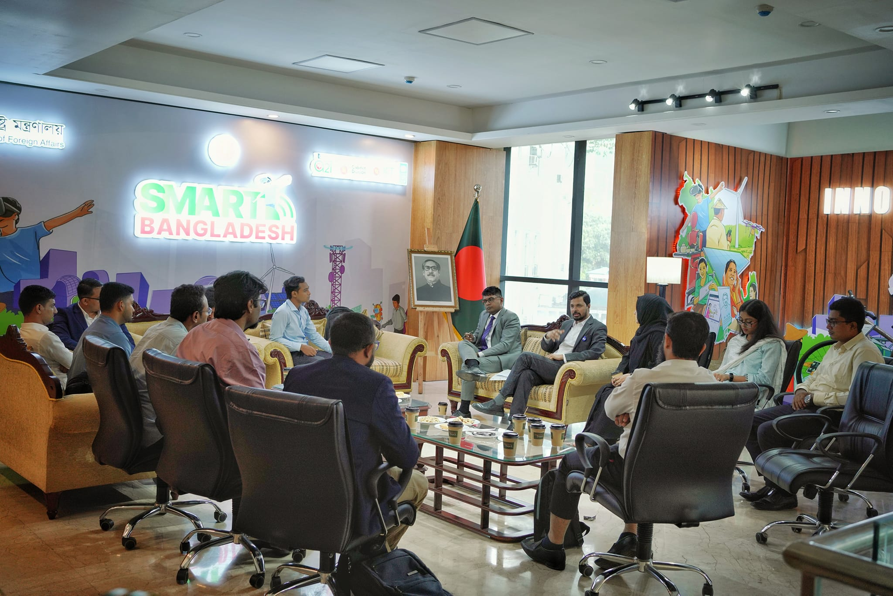
-
100% Merit-Based Scholarship Waiver — Summer 2022
BRAC UniversityApril 2022
Received a 100% tuition fee waiver as a merit scholarship based on academic results (CGPA 4.00/4.00) up to the Summer 2022 semester.
-
100% Merit-Based Scholarship Waiver — Spring 2022
BRAC UniversityJanuary 2022
Received a 100% tuition fee waiver as a merit scholarship based on academic results (CGPA 4.00/4.00) up to the Spring 2022 semester.
-
Vice Chancellor's List
BRAC UniversityApril 2020
Named to the Vice Chancellor's list for achieving a GPA of 4.00 out of 4.00 across 18 credits in the Spring 2020 semester.